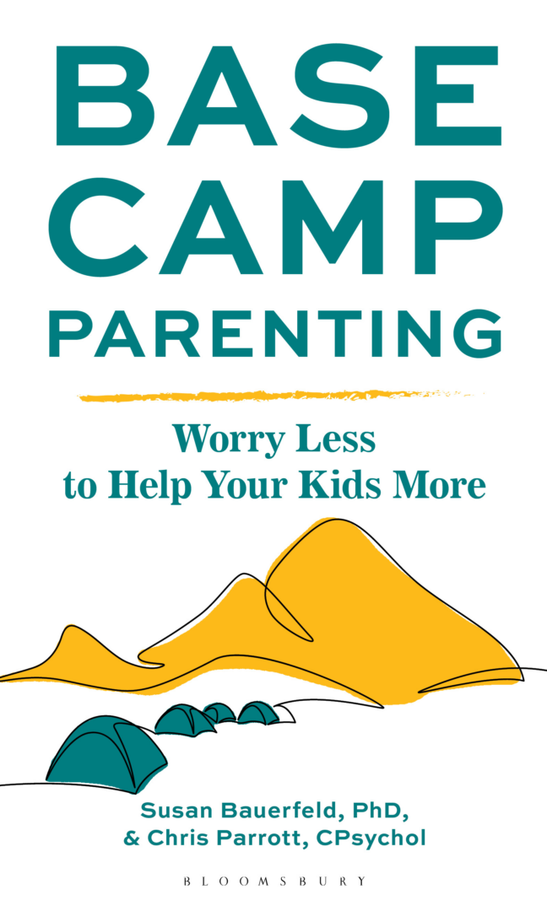

Providing compassionate guidance and support asA Trusted Psychologist – Susan Bauerfeld PhD
Licensed Clinical Psychologist, Author, Speaker, Workshop Leader & Facilitator, Parenting Mentor


Experienced Clinical Psychologist
For almost two decades, I have provided education and support to parents raising children in Fairfield County, CT. Although retired from private practice, I bring experience working with individuals struggling with anxiety, trauma, learning challenges, and health issues (including TBI, chronic pain, and chronic illness) to workshops and community presentations. My new book, Base Camp Parenting (co-authored with Chris Parrott), offers parents the tools to worry less and help their kids more.
My Philosophy
Everyone can learn a more effective way of managing their life, their job, and their family. All it takes is good enough knowledge, the will to change, time, effort, practice, and encouragement.
In group workshops and speaking engagements, I teach people how to create positive change for themselves and their loved ones. My approach is grounded in Internal Family Systems and integrated with techniques from Cognitive Behavioral Therapy, Dialectical Behavior Therapy, Short-term Psychodynamic Therapy, Mindfulness Training, Life Coaching, Interpersonal Neurobiology, and Neuropsychological Rehabilitation. My goal is to help the people I work with to learn, develop, and practice effective strategies for becoming more capable, calm, and connected.
Areas of Specialization
- Parenting/Family Issues
- Anxiety Management
- Trauma
- Coping With Learning/Functioning Challenges
- ADHD
- Learning Disabilities
- Traumatic Brain Injuries
- Technology Management
- Chronic Pain/Illness
Get in Touch
For inquiries about hosting a book talk, forming a group, or offering a presentation in your community, please email me at Susan@susanbauerfeld.com. Please note that I am no longer seeing individual clients.
Client Testimonials
—Discharged client writing during the COVID-19 pandemic“We are just writing to say we are very thankful for you at this moment in time. Other than a small blow up by our son shortly after schools closed, we are all doing very well despite being holed up together for nearly two weeks. In fact, anecdotally, I think we are doing better than a lot of other families. More calm, less arguments, more cooperation. Without you, we are sure the report would have been VERY different. So thank you from the bottom of our hearts!!!”
—Mom of a client upon client’s graduation from college“I really appreciate your coaching my daughter over the years! Your empathy and guidance have helped her climb many mountains, develop confidence in her abilities and become more secure in just being herself. Thank you from the bottom of my heart!”
—Wilton Mom, December 2016“I just completed the How to Talk so kids will listen course with you and Margaret Creeth. For me it has been a life changing experience. So, I wanted to say Thank you to you and Margaret, Thanks.”
—Anonymous evaluation following a presentation“I like Dr. Bauerfeld’s compassionate, down to earth demeanor and ability to share personal experiences and feelings that we can laugh at AND identify with. Re-iterating how to control our fears and reactions to support our kids better was helpful.”
—Adult client“Dr. Bauerfeld helped me embrace that my mind works differently and find solutions that propelled my career and capacity to connect with loved ones. She is intelligent, knowledgeable and resourceful. She really, really cares. I recommend her as highly as one possibly can.”
—HS“I wanted to thank you! I really enjoyed the course I attended. I feel like I have a new set of wings! You have taught me to look at things with a new insight and have given me the tools to implement them. This has helped me with everything in my daily life..of being a mother, a wife, sister, teacher, friend…etc”
—Mother of three boys“Susan has helped me put the ‘me’ back in my role as ‘parent’. I have learned that to be a strong and successful parent you must include the needs of ‘self’ as much as the needs of your children.”
—Wilton Mom“I would highly recommend Dr. Bauerfeld to anyone looking for help with family concerns of any kind. Her wisdom, compassion and kind demeanor are the perfect combination that make her an outstanding psychologist.”
—Mother of teenage boy“Not just theory, but practical guidance that works…so teenagers will talk to their parents!”
The following are from anonymous evaluations filled out after various talks.
“Gave an excellent summarization on a relevant topic with helpful tools”
“Reinforces common sense practices which apply to kids of any age”
Dr. Bauerfeld has “compassion for parents’ difficulties”
Dr. Bauerfeld “is very sincere and well-prepared”.
The “topic was relevant and interesting”.
The presentation “opened my eyes to new ways of thinking”.
“practical examples”, “examples to illustrate points”, “examples are the most helpful”.
“The information was presented in a very informative way that I could understand and use”
“research based information clearly presented” “the explanation of the studies – thorough and distilling the essence to us”
“was practical” “practical info to use”
“You have helped me to understand my … daughter. Thank you!”